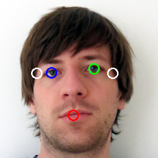

Visualisierung 2. SS2016. Pinetz Thomas, Scheidl Harald
We're taking two orthogonal images: one from front, the other from the right (as seen from the photographed person)

A Gaussian blur is applied to remove noise in the input images. This yields a better segmentation.
Skin segmentation is done in the YCrCb color space. The threshold values from the original paper work very well, but we provide a slider in the user interface to adjust this threshold if needed.

A polygon with at least 5 vertices is fit around the face contour. The nose is the rightmost point of this polygon. The chin can be found by starting at the nose and then going down, searching for a transition from a convex to a concave part of the polygon (this can easily be checked by the sign of the determinant of two vectors).
The three biggest inner regions are used as potential face components.

Classification of potential face components is done by using a set of geometric rules (e.g. that eyes are above nose).

A binary mask is used to segment the face.


Aligning and resizing the segmented face images to get the textures.